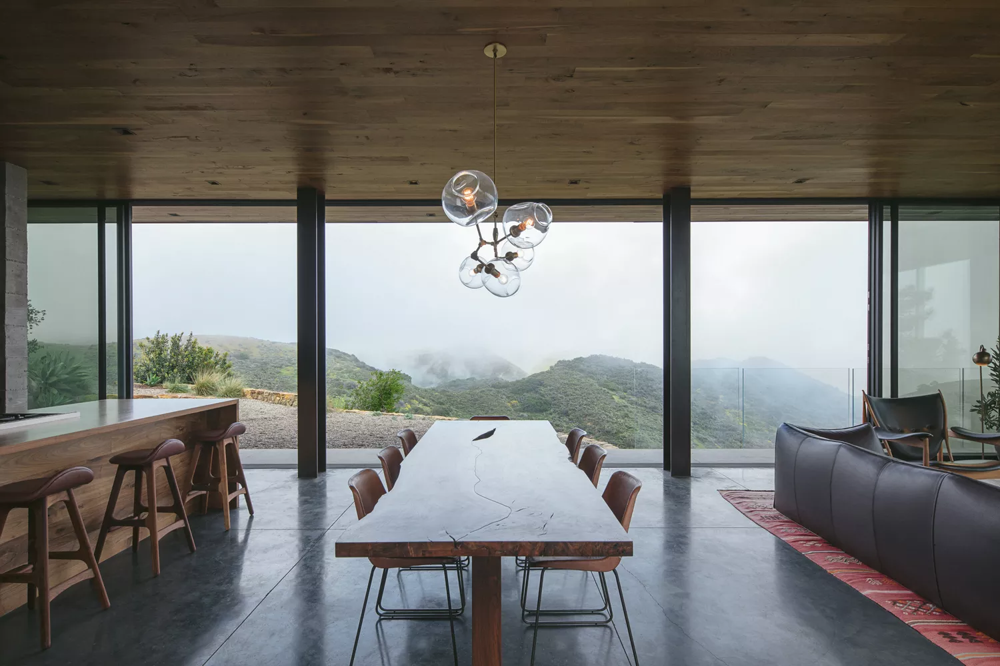

Desde 2014 transformando luz em experiência. A Vidraçaria Vridos nasceu com a missão de ir além do vidro: criamos projetos que iluminam ambientes, valorizam espaços e constroem confiança através da transparência, qualidade e cuidado em cada detalhe.
No coração de um bairro tranquilo, onde o comércio ainda preservava o costume de conhecer cada cliente pelo nome, nasceu a Vidraçaria Vridos.
Diferente das outras lojas da região, a Vridos não vendia apenas vidro — ela transformava luz em experiência.
Seu fundador, Rafael Dorneles, sempre dizia que o vidro não era frágil. “Frágil é a pressa”, repetia, enquanto cortava cada peça com precisão quase artística. Ele acreditava que cada janela era um quadro, cada espelho uma nova perspectiva e cada fachada uma oportunidade de contar uma história.
A Vidraçaria Vridos começou pequena: uma porta azul-clara, uma bancada de madeira marcada pelo tempo e uma vitrine com amostras que refletiam o movimento da rua. Mas rapidamente ganhou reputação por algo especial — o cuidado.
Quando Dona Lúcia precisou substituir a janela antiga da casa onde morava há 40 anos, a equipe da Vridos não apenas instalou um novo vidro; eles restauraram a moldura original, preservando as memórias que viviam ali. Quando um jovem empreendedor quis abrir seu primeiro café, a Vridos criou uma fachada moderna, ampla e iluminada, que transformou o espaço em ponto de encontro do bairro.
Com o tempo, a vidraçaria passou a oferecer: Box de banheiro sob medida Fachadas comerciais Espelhos decorativos Guarda-corpos de vidro Projetos personalizados para residências e empresas Mas o que realmente diferenciava a Vidraçaria Vridos era sua filosofia: transparência em tudo. No atendimento, nos prazos, nos valores e, claro, nos materiais. O slogan surgiu quase por acaso, escrito à mão em um pedaço de papel preso à parede da oficina: “Vidraçaria Vridos — Transparência que constrói confiança.” E assim, a cada projeto concluído, a cada reflexo que capturava um sorriso satisfeito, a Vridos não apenas instalava vidros — ela abria novas vistas, iluminava sonhos e ajudava pessoas a enxergar possibilidades. Porque, para a Vidraçaria Vridos, o mundo sempre fica melhor quando visto através da qualidade.
